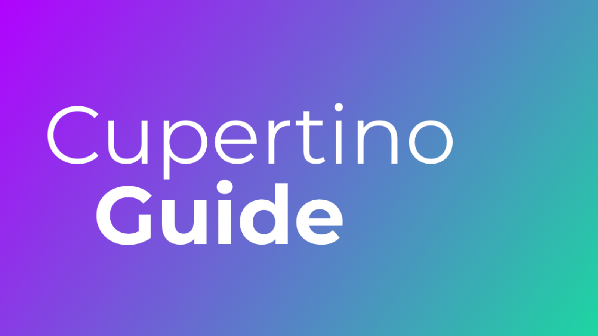
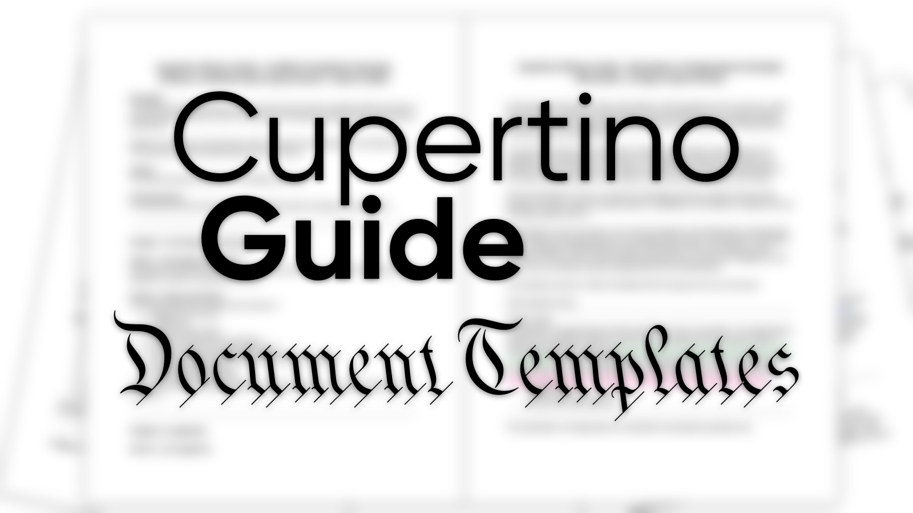

Welcome to the Cupertino Alliance
"By being in the Alliance, you've already shown yourself as a nation that is trustworthy, successful and can be counted on. As we come together to work on issues we have in common and find ethical, practical solutions, we must also realize that the outside world is also looking at this alliance." - William Efton, former Chair
Join the CAAbout the CA
A micronational organization committed to the development and improvement of member nations.
There are many organizations in the micronational community. So many in fact,
they are often referred to as "YAMO"; "Yet Another Micronational Organization".
They often exhibit the failure of identifying problems in the community, many
of which their members contribute to.
What makes the Cupertino Alliance different, is that we work to stop the ever-
growing problem of inactivity within the micronational community.
Not just another micronational organization, the CA makes every effort to be
the micronational organization. We speak sense, and respect your opinion. We
have access to useful agreements, documents and resources. Everything we
have put into place is for our members. We are a rising star in the micronational
community.
35
FULL MEMBERS
They gain access to all programs, get to run for Chair, Lieutenant Chair, Superior Judge, Associate Judge, and ministerial positions, as well as be allowed to appoint 3 delegates.
6
PROVISIONAL MEMBERS
They do not have access to programs nor are allowed to run for positions, but are allowed to appoint 3 delegates to report to Parliament.
150+
SESSIONS
All delegates of the Cupertino Alliance report to Parliament in a session, where delegates discuss Cupertino Alliance legislation, issues, new programs, and the like.
56
DELEGATES
Delegates represent their nation that they were appointed by, report to Parliament where they vote and discuss on issues and legislature, and can participate in Alliance events, run for positions, etc.
PROJECTS
We believe that one's nation must benefit in joining an organization. Hence why we have a lot of useful projects.
Noted! Tours
The Noted! Tours is an international tour where participating delegate pass on a notebook, writing on one of the pages to mark that they received it.
Learn moreCupertino Service Ribbons
The Cupertino Service Ribbons are honors nominated to by delegates and awarded by the Chair of the Board every January and July, for their contributions to the Cupertino Alliance.
Learn moreEdinburgh system
The Edinburgh system is a rating system for MicroWiki pages. Member states use this to help improve their own articles and develop their MicroWiki presence.
See articles ratedCalgary system
The Calgary system is a rating system used to rate the quality of a picture on MicroWiki.
Learn moreNorth Lincolnshire Project
The North Lincolnshire Project aims to help member states with vector graphics such as flags, seals and coats of arms.
For members only
Nutmeg Project
The Nutmeg Project is a way to share news from a member state with other member states on Discord.
For members only
Cupertino Gazette
The Cupertino Gazette is our weekly public bulletin on new acts and weekly discussions of the Cupertino Alliance Parliament.
Learn moreCupertino Alliance Factbook
The Cupertino Alliance Factbook is one of the most comprehensive resources of information on CA member states.
Learn more

Cupertino Guides
The Cupertino Guides are tutorials to help set up the foundation for your nation and your online presence.
Open Guides

Cupertino Guides Document Templates
A supplementary resource to the Cupertino Guides, these document templates help you set up your nation and government.
See templatesCapstone Tribune
The Capstone Tribune gathers the latest developments and news from member states and compiles them into a bulletin.
For members only
GreenCities Project
The GreenCities Project is a way to subsidize member nations' agriculture and plantation.
For members only
MicroNear
MicroNear is an app that lets you see the micronations closest to you and add your own micronation for others to see.
Open MicroNear (web)micronations.ca
micronations.ca is a free website program that gives member nations free domains with no hassle.
For members only
WE'RE ACTIVE
We have weekly meetings where CA delegates propose legislation to be passed. Member nations frequently have elections, and a majority of their citizens are involved in their respective governments.
COMMUNITY
We've developed programs like Nutmeg and the Noted project, connecting members with other members. Many members in the alliance have also recongized and helped each other.
WE CARE
Our member nations are important to us, and so are those nation's activity levels. We try to improve them through forming treaties, making agreements, and working on your nation's behalf.
QUALITY OVER QUANTITY
Instead of looking at applicants at face value, we independently research them. We search their social media accounds, Discord, MicroWiki, and website, among many others. This familiarizes us with them, and helps us better understand their problems. Something vital for member development.
Main website
Projects
Agencies

Cupertino Alliance
Copyright © Ministry of Technology. All rights reserved.